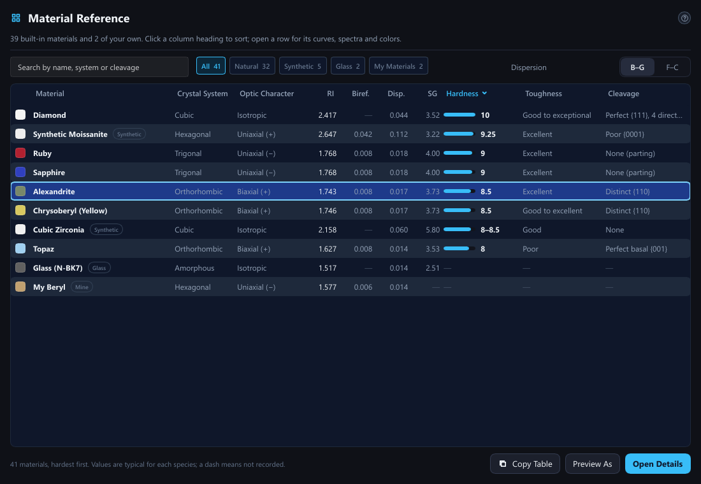
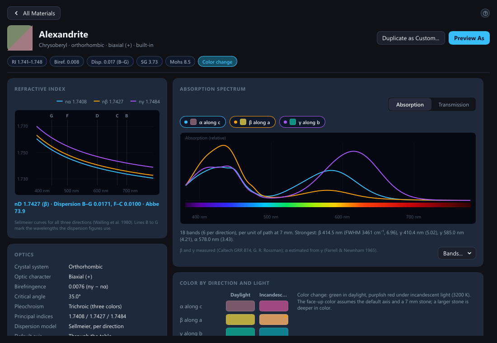
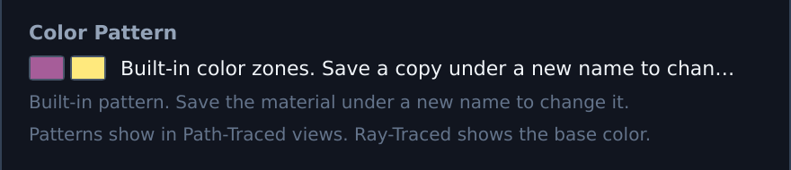
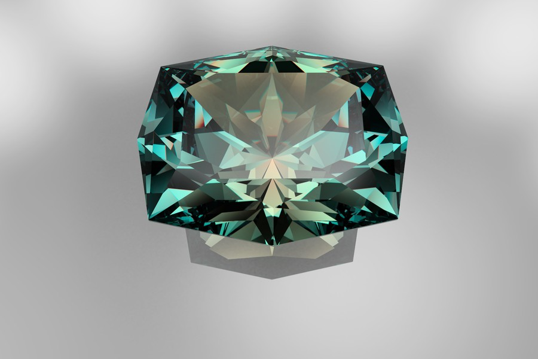
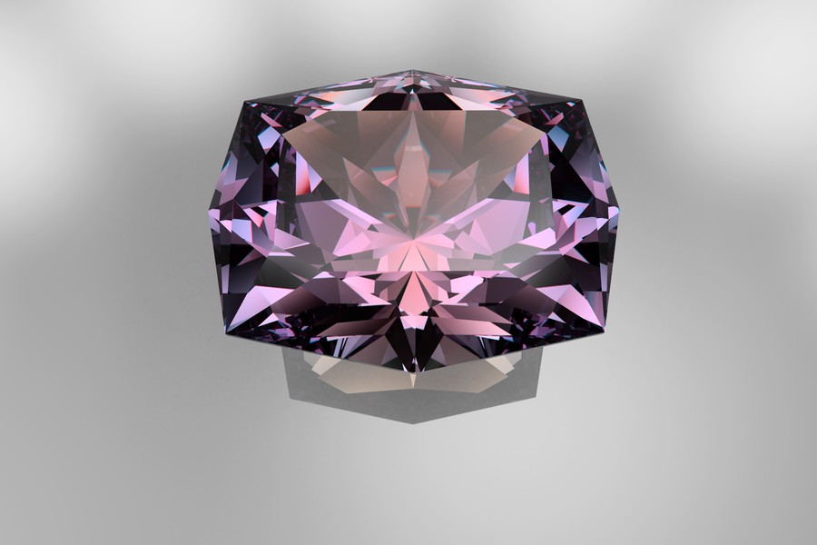

Materials
The optical constants Pleochroma ships built in, and where each one comes from.
1Dispersion chart
Each line is one material's refractive index n(λ) across the visible spectrum, from violet (380 nm, left) to red (780 nm, right), drawn from the same coefficients as the table below, and colored by wavelength. The readout below the chart gives the dispersion as F−C, the figure the Material Editor takes as input; the app’s read-only displays show B−G, the figure gem references print, and both are in the table (B−G and F−C). The index always falls toward the red, and the steeper the line, the stronger the dispersion and the fire. The dot marks nD at 589 nm, the value usually quoted for a gem. All materials share one scale, so switching between them shows where each one sits.
- Material
- Diamond (C)
- Crystal system
- Cubic (Isotropic)
- Optical character
- Isotropic
- n_D (589 nm)
- 2.4173
- Dispersion (n_F − n_C)
- 0.0256
- Abbe number (V_d)
- 55.3
- Birefringence (Δn)
- 0.0000 (none)
- Specific gravity
- 3.52
Exceptional brilliance and adamantine luster with intense fire. The reference isotropic gemstone.
2The 39 built-in materials
All figures below are read from crates/pleochroma/src/optics/materials/ (one file per group of species).
n_D and dispersion (Δn, F−C) come from each material's own source
comment: a primary Sellmeier/Cauchy fit where one exists in the optics
literature, or a value derived from two or more corroborating
gemological references where it does not — the source file documents
which for every row. Birefringence is birefringence_delta
as stored (n_e − n_o for uniaxial materials, the signed or unsigned
total spread for biaxial ones, per the field's own doc comment). The
B−G dispersion is computed from the same curve, and the specific
gravity, Mohs hardness and toughness are the gem data described
below.
| Material | Crystal system | Optical character | n_D | Dispersion (F−C) | Dispersion (B−G) | Birefringence | Specific gravity | Mohs | Toughness |
|---|---|---|---|---|---|---|---|---|---|
| Diamond | Cubic | Isotropic | 2.41726 | 0.0256 | 0.0444 | 0.0000 | 3.52 (3.50–3.53) | 10 | Good to exceptional |
| Sapphire | Trigonal | Uniaxial − | 1.76808 | 0.0106 | 0.0181 | −0.0081 | 4.00 (3.99–4.10) | 9 | Excellent |
| Ruby | Trigonal | Uniaxial − | 1.76808 | 0.0106 | 0.0181 | −0.0081 | 4.00 (3.99–4.10) | 9 | Excellent |
| Emerald | Hexagonal | Uniaxial − | 1.5791 | 0.0082 | 0.0140 | −0.0060 | 2.76 (2.67–2.78) | 7.5–8 | Fair to good |
| Zircon (high) | Tetragonal | Uniaxial + | 1.9250 | 0.0226 | 0.0386 | +0.0590 | 4.65 (3.90–4.73) | 6–7.5 | Fair to good |
| Alexandrite | Orthorhombic | Biaxial + | 1.74273 | 0.0101 | 0.0171 | +0.0076 | 3.73 (3.68–3.78) | 8.5 | Excellent |
| Topaz | Orthorhombic | Biaxial + | 1.62718 | 0.0082 | 0.0140 | +0.0080 | 3.53 (3.49–3.57) | 8 | Poor |
| Spinel | Cubic | Isotropic | 1.71610 | 0.0118 | 0.0202 | 0.0000 | 3.60 (3.58–3.61) | 7.5–8 | Good |
| Quartz | Trigonal | Uniaxial + | 1.54421 | 0.0078 | 0.0133 | +0.0091 | 2.65 (2.65–2.66) | 7 | Good |
| Tourmaline (elbaite) | Trigonal | Uniaxial − | 1.63941 | 0.0099 | 0.0169 | −0.0210 | 3.06 (2.82–3.32) | 7–7.5 | Fair |
| Tanzanite (heated) | Orthorhombic | Biaxial + | 1.6943• | 0.0174 | 0.0298 | +0.0130 | 3.35 (3.15–3.36) | 6–7 | Poor to fair |
| Synthetic moissanite | Hexagonal | Uniaxial + | 2.64743 | 0.0635 | 0.1117 | +0.0415 | 3.22 (3.21–3.22) | 9.25 | Excellent |
| Cubic zirconia | Cubic | Isotropic | 2.15846 | 0.0346 | 0.0604 | 0.0000 | 5.80 (5.60–6.00) | 8–8.5 | Good |
| Aquamarine | Hexagonal | Uniaxial − | 1.57700 | 0.0082 | 0.0140 | −0.0060 | 2.72 (2.68–2.74) | 7.5–8 | Good |
| Morganite | Hexagonal | Uniaxial − | 1.57700 | 0.0082 | 0.0140 | −0.0060 | 2.86 (2.80–2.91)§ | 7.5–8 | Good |
| Chrysoberyl (yellow) | Orthorhombic | Biaxial + | 1.746 | 0.0100 | 0.0171 | +0.0076 | 3.73 (3.70–3.78) | 8.5 | Good to excellent |
| Amethyst | Trigonal | Uniaxial + | 1.54421 | 0.0078 | 0.0133 | +0.0091 | 2.65 (2.65–2.66) | 7 | Good |
| Citrine | Trigonal | Uniaxial + | 1.54421 | 0.0078 | 0.0133 | +0.0091 | 2.65 (2.65–2.66) | 7 | Good |
| Ametrine (color zoned) | Trigonal | Uniaxial + | 1.54421 | 0.0078 | 0.0133 | +0.0091 | 2.65 (2.65–2.66) | 7 | Good |
| Pyrope garnet | Cubic | Isotropic | 1.714 | 0.0127 | 0.0218 | 0.0000 | 3.74 (3.65–3.87) | 7–7.5 | Fair to good |
| Almandine garnet | Cubic | Isotropic | 1.790 | 0.0139 | 0.0238 | 0.0000 | 4.19 (3.95–4.30) | 7–7.5 | Fair to good |
| Spessartine garnet | Cubic | Isotropic | 1.800 | 0.0156 | 0.0267 | 0.0000 | 4.18 (4.12–4.20) | 7–7.5 | Fair to good |
| Color-change garnet (pyrope-spessartine) | Cubic | Isotropic | 1.760 | 0.0145 | 0.0248 | 0.0000 | 3.92 (3.83–4.00)§ | 7–7.5 | Fair to good |
| Grossular garnet (tsavorite) | Cubic | Isotropic | 1.734 | 0.0162 | 0.0277 | 0.0000 | 3.61 (3.55–3.73) | 6.5–7.5 | Fair to good |
| Andradite garnet (demantoid) | Cubic | Isotropic | 1.887 | 0.0330 | 0.0565 | 0.0000 | 3.86 (3.80–3.90) | 6.5–7 | Fair to good |
| Peridot | Orthorhombic | Biaxial + | 1.669• | 0.0116 | 0.0198 | +0.0360 | 3.34 | 6.5–7 | Fair to good |
| YAG | Cubic | Isotropic | 1.83265 | 0.0158 | 0.0272 | 0.0000 | 4.55 (4.55–4.65) | 8.25 | Good |
| GGG | Cubic | Isotropic | 1.970 | 0.0255 | 0.0445 | 0.0000 | 7.05 (7.00–7.09) | 6.5 | Fair to good |
| Benitoite | Hexagonal | Uniaxial + | 1.757 | 0.0261 | 0.0390 | +0.0470 | 3.65 (3.65–3.68) | 6–6.5 | Not graded |
| Andalusite | Orthorhombic | Biaxial − | 1.634 | 0.0093 | 0.0158 | 0.0100 | 3.15 (3.13–3.16) | 6.5–7.5 | Fair to good |
| Opal (body color) | Amorphous* | Isotropic | 1.45 | 0.0010 | 0.0017 | 0.0000 | 2.09 (1.90–2.30)¶ | 5–6.5 | Very poor to fair |
| Glass (Schott N-BK7) | —† | Isotropic | 1.51672 | 0.0081 | 0.0138 | 0.0000 | 2.51 | about 5.5 (Knoop 610) | Not graded |
| Glass (Schott F2) | —† | Isotropic | 1.61989 | 0.0171 | 0.0300 | 0.0000 | 3.60 | about 5.5 (Knoop 420) | Not graded |
| Rutile | Tetragonal | Uniaxial + | 2.613 (o) / 2.909 (e) | 0.164 (o) / 0.207 (e) | 0.3123 (o) | +0.2957 | 4.25 | 6–6.5 | Poor to fair |
| Precious opal (white) | Amorphous* | Isotropic | 1.45 | 0.0010 | 0.0017 | 0.0000 | 2.09 (1.90–2.30)¶ | 5–6.5 | Very poor to fair |
| Precious opal (black) | Amorphous* | Isotropic | 1.45 | 0.0010 | 0.0017 | 0.0000 | 2.09 (1.90–2.30)¶ | 5–6.5 | Very poor to fair |
| Labradorite | Triclinic | Biaxial + | 1.5625 | 0.0070‡ | 0.012 | +0.0080 | 2.69 (2.68–2.71) | 6–6.5 | Poor |
| Moonstone | Monoclinic | Biaxial − | 1.523 | 0.0070 | 0.012 | 0.0080 | 2.58 (2.56–2.59) | 6–6.5 | Poor |
| Titanite (sphene) | Monoclinic | Biaxial + | 1.894 | 0.0330 | 0.0577 | 0.1226 | 3.53 (3.48–3.60) | 5–5.5 | Not graded |
*Opal is a mineraloid with no true crystal structure; the
source code stores Cubic as a placeholder for "isotropic,"
not a mineralogical claim — its own comment says so explicitly.
†The two reference optical glasses are amorphous, included as
isotropic calibration materials rather than gemstones.
‡No measured dispersion was found for labradorite; the
entry borrows the size of moonstone’s (B−G 0.012) as a
placeholder.
§Derived specific gravity, explained below.
¶The three opal rows share one cited range; another
table prints a different, wider one that includes porous material.
•The model value of the app’s curve (the
middle ray, nβ), not a published figure: measured
tanzanite lies at 1.691–1.700 and peridot at 1.65–1.69 (GIA).
GGG’s published dispersion of 0.045 is a B−G figure; the
curve gives 0.0445 (B−G) and 0.0255 (F−C).
Rutile’s B−G is the ordinary ray’s. For the glasses
the hardness is the generic figure for glass, with the Knoop hardness
of the Schott datasheet. A dispersion and a specific gravity are
figures of the species or of the typical cut stone, not of every
specimen.
Gem data: hardness, toughness, cleavage and care
Each built-in material carries the facts a cutter acts on at the wheel: Mohs hardness as a range, toughness (how well the stone resists chipping and breaking, a grade from very poor to excellent, which is not the same thing as hardness), cleavage (the directions in which the crystal splits along a flat plane, with its quality and Miller indices), parting (a similar break along a twin or growth plane that is not part of the structure), fracture (the shape of a break that follows no plane), care notes and specific gravity as a representative value with a range. All of it is typical for the species, not a measurement of one stone, and a value that no reliable source gives is left out and shown as “Not recorded” (toughness: “Not graded”) instead of being guessed. Toughness is not graded for benitoite, titanite and the two reference glasses, and the cleavage and fracture of GGG are not recorded.
Where sources differ the app follows one fixed order. Hardness and toughness come from the GIA gem care pages and the GIA Gem Cleaning and Display Chart (rev. October 2018, a range wider than the care page’s is shown as the page’s and the chart’s wider range is kept as a note); for a synthetic, from Nassau et al. (1997). The crystallography (cleavage, parting, fracture, with Miller indices) comes from the Handbook of Mineralogy, and from webmineral or Wikipedia only for the materials the handbook has no page for. Care advice is GIA’s. Where a second source disagrees, the entry shows the first and carries a “Sources differ” note: alexandrite (GIA reports no cleavage) and synthetic moissanite (a hammer test found none) are examples. Spinel is shown as 7.5–8, GIA’s 8 widened by the handbook’s range.
Two specific-gravity entries are derived. A derived value is computed from cited figures and is marked as such, never presented as a source’s own number. Morganite’s 2.86 is the midpoint of the range GIA prints (2.80–2.91), since no source gives a single figure. The color-change garnet’s 3.92 is the midpoint of the range merged from two Gems & Gemology studies of color-change pyrope-spessartine (3.83–3.88 and 3.93–4.00), because no source gives a range for the species. Every input of a derived value is cited. For the garnets the representative describes the gem the optical entry models, not the pure end-member (the handbook’s 3.582 for pyrope and 4.318 for almandine are kept as notes). A value taken over from the species or the end-members, such as the care note of yellow chrysoberyl (taken from alexandrite, the same species), or the opal rows that share one species’ data, carries its basis note. The specific gravity feeds the carat estimate of a design.
Durability and cleavage
Cleavage matters most where a plane meets a facet, a girdle or the setting. These are the stones where it decides how the stone is cut, polished and mounted. The full list is in the Material Reference window and the manual.
| Material | Cleavage | Parting | Fracture | Source |
|---|---|---|---|---|
| Diamond | Perfect octahedral {111}, four directions | — | Conchoidal | GIA chart, Handbook of Mineralogy, webmineral, Nassau et al. 1997 |
| Sapphire, ruby | None | Basal {0001}, rhombohedral {10-11} | Uneven to conchoidal | Handbook of Mineralogy (corundum) |
| Topaz | Perfect basal {001} | — | Subconchoidal to uneven | Handbook of Mineralogy |
| Tanzanite | Perfect {010}, imperfect {100} | — | Uneven to conchoidal | Handbook of Mineralogy (zoisite); webmineral gives {001}, another axis setting |
| Moonstone | Perfect {001} and {010} | {100}, {110}, {1-10}, {-201} | Conchoidal to uneven | Handbook of Mineralogy (orthoclase) |
| Labradorite | Perfect {001}, good {010} (about 90°), distinct {110} | — | Uneven to conchoidal | webmineral, Wikipedia, Handbook of Mineralogy (anorthite, the plagioclase end-member) |
A dash means no parting is recorded. Cleavage indices are those of the source; two sources may index the same plane in different axis settings.
Sources
Each value carries its source, and a value that only retail pages, hobbyist tables or search snippets give is not stored. The sources are:
- GIA: the Gem Encyclopedia care pages and fact pages (gia.edu), and the Gem Cleaning and Display Chart, revision October 2018 (GIA store). GIA has no care page for chrysoberyl, so that entry reads “values of the chrysoberyl species”.
- Handbook of Mineralogy (Anthony, Bideaux, Bladh and Nichols): handbookofmineralogy.org, for cleavage, parting, fracture and specific gravity.
- Nassau, McClure, Elen, Shigley, “Synthetic Moissanite: A New Diamond Substitute”, Gems & Gemology, Winter 1997, pp. 260–275, Table 1, for the synthetics (moissanite, cubic zirconia, YAG, GGG, synthetic rutile). Its dispersion column is read as B−G.
- International Gem Society (gemsociety.org) for specific-gravity ranges and for care where GIA has no page, and webmineral.com for opal, labradorite and a few specific-gravity averages.
- Schott optical glass datasheets, for the density, Knoop hardness, transition temperature and chemical classes of the two reference glasses.
Dispersion: B−G and F−C
Two conventions are in use for “dispersion”. F−C is the difference of the refractive index at the hydrogen F and C lines (486.1 and 656.3 nm), the figure behind the Abbe number. B−G is the difference between the Fraunhofer B and G lines (686.7 and 430.8 nm), the wider interval gemological references print and the one a designer knows: diamond is 0.044. Everywhere the app only shows the number (the Stone tab’s Dispersion chip, the Material Reference, the details page, the mobile app, the command-line tool) it gives B−G. The Material Editor keeps F−C, labelled, because there it is an input that defines the curve, and so do the Abbe number and the readout of the editor. The number comes from the material’s own curve (the ordinary ray, or the middle ray of a biaxial crystal), so it can differ from a handbook figure: for synthetic moissanite the curve gives 0.112 against the published 0.104, and for synthetic rutile 0.312 against 0.330. The Material Reference has a B−G | F−C toggle, B−G by default.
The Material Reference window
The Material Reference is a window of its own, separate from the design, so it can stay open beside the Stone tab. Open it from the Stone tab’s identity card menu or the Material Details… button of the Gem Data card, from the Help menu, the command palette or the Material Editor. It lists all 39 built-in materials and your own with the crystal system, optic character, refractive index, birefringence, dispersion, specific gravity, hardness, toughness and cleavage. A click on a column heading sorts by it, a second click reverses the order, and a missing value always sorts last. The search field finds a name, a crystal system or a cleavage, and the chips filter by natural, synthetic, glass and your own materials. Copy Table copies the rows as tab-separated text.

Opening a row, or Open Details, swaps the table for the Material Details page. It shows the refractive-index curve of each ray with the Fraunhofer lines marked and a readout of nD, the dispersion in both conventions and the Abbe number; the absorption spectrum of each ray, as absorption or as transmission at the stone’s width, with its band list; the color of each direction in daylight and under an incandescent lamp (3200 K) and the face-up color, with the explanation of a color change; the color variants; and the gem data above with its sources. Preview As shows the material on the open design without changing it, and Duplicate as Custom… opens the Material Editor with this material as the template. With a design open, Use for Design applies the chosen color variant as one undoable edit.

A custom material can carry the same fields (hardness, toughness, cleavage, parting, fracture, specific gravity and care, as free text and numbers); what you do not enter reads “Not recorded”, and its sources read “Entered by you”.
Stones whose look comes from the inside
Four rows near the end are the host optics of stones that owe their look to what is inside them: Precious opal (white), with a pale body and a milky veil, Precious opal (black), with a dark neutral body, Labradorite and Moonstone. The play-of-color of opal, the schiller of labradorite and the adularescence of moonstone are not part of the material but a choice of the design, made in the Stone tab, so the same material can be shown plain or with its effect. The older Opal row is the plain body-color opal and is unchanged. The effects, the silk presets of the other materials and the surface finish of a facet are described on the surface finish, silk and play-of-color page.
A refractive-index curve for each ray
Most birefringent materials give the ordinary ray (or the middle ray of a two-axis crystal) its own dispersion and add the birefringence as one constant. Where a published curve exists for the other rays, the renderer uses the curve:
- Sapphire and ruby: the extraordinary ray of Malitson and Dodge (1972). The index of the extraordinary ray lies 0.0085 below the ordinary one at 400 nm and 0.0080 below at 700 nm, 0.0081 at the sodium line, the figure in the table.
- Synthetic moissanite: the 6H extraordinary ray of Wang (2013).
- Alexandrite and chrysoberyl (yellow): the alpha and gamma rays of Walling (1980). Chrysoberyl takes the published fit, so its total birefringence is +0.0076.
- Benitoite: a separate Cauchy curve for each ray, with the ordinary ray’s dispersion set to the published 0.039 and the extraordinary ray’s 0.046.
- Quartz, amethyst, citrine, ametrine and rutile have one.
The remaining birefringent built-ins (zircon, tourmaline, the beryls, topaz, tanzanite, peridot, andalusite, labradorite and moonstone) keep a constant offset, because no per-ray dispersion was found for them. Because the direction in which the extraordinary ray is displaced follows the index at each wavelength, the doubled images of a stone separate a little by color.
Where each material’s color comes from
A built-in material’s color is a set of absorption bands, each with a position, a width and a strength, and a pleochroic material has one set per ray direction. The colors of ten built-ins are fitted to published measured absorption spectra, and their bands are Gaussian in energy (wavenumber). Amethyst and Citrine keep their earlier data.
- Fitted to published measured spectra: Ruby and Sapphire (GIA cross-section data for the Cr3+ and Fe3+ bands of ruby and the Fe2+–Ti4+ bands of sapphire), Emerald (Caltech spectrum GRR 3570), Peridot (Caltech olivine spectra along the three principal rays), Spessartine (Caltech GRR 43), Tsavorite (Caltech GRR 229), Tourmaline (Caltech GRR 1935, a green elbaite from Usakos, Namibia, fitted per ray at 0.34 times the crystal), Demantoid (GIA 2952 and the Topazolite spectrum GRR 48, both from the Caltech server, plus one tuned band that has no spectrum behind it, see below), Aquamarine (two polarized Caltech spectra of GRR 1488) and Tanzanite, heated (three polarized Caltech spectra of the blue zoisite GRR 2292). Each band set is a bounded least-squares fit to the measured curve.
- Earlier data, hand-set wavelength bands: Amethyst and Citrine. Ametrine is Amethyst and Citrine in two zones, described below.
Tanzanite is the heated, violet-blue stone sold under that name. It has three polarized absorption sets (alpha, beta, gamma), fitted to a naturally blue zoisite crystal that lacks the band heating removes. Alpha is the darkest and most purplish ray, beta is blue and gamma is the lightest. Aquamarine has its c axis in the table plane, as Tourmaline does, so a stone seen face-up shows the blue ray and reads light blue; with the axis along the view it would show the nearly colorless ordinary ray.
Color variants and pleochroism
Each built-in material comes with named color variants: Pink and Yellow for a sapphire, Rubellite and Verdelite for a tourmaline, Cape Yellow and Blue for a diamond, and so on. A variant is a complete absorption spectrum for every direction through the crystal, not a single tint, so a pleochroic stone keeps its different colors in different directions when you pick one. Its refractive index, dispersion, birefringence and crystal axis stay as they are, and the choice belongs to that design alone: a variant never becomes the material’s default. A one-axis crystal (sapphire, tourmaline, quartz, beryl) has two colors, one along the crystal axis and one across it; a two-axis crystal (tanzanite, alexandrite, topaz, andalusite) has three, alpha, beta and gamma. That is why the color list of a pleochroic stone offers no generic one-color presets, and why the custom color editor has one row for each direction.
Many of the built-in variants are fitted to measured absorption spectra of the variety, mostly taken with polarized light (the Caltech Mineral Spectroscopy Server, the GIA studies of the causes of color in corundum, and papers on individual gems); the others are built from published band positions. A variant is marked Estimated (in the note on the entry and in the Color Variants section) when its spectrum is not a measured one of that variety or its strength was chosen for a typical face-up color, which is true of almost all of them. Each one keeps its sources. The same beryl color (Heliodor, Red Beryl, Goshenite) is offered for Aquamarine, Emerald and Morganite; it is defined relative to the crystal axis, and each material’s own default axis decides which direction you see face-up, so the same variant looks different on the three. You can save your own from the custom color editor (Save as Variant…); they are listed for that material only and are managed in the Material Editor’s Color Variants section (rename, duplicate, delete). A design keeps its own copy of the variant it uses, so it looks the same on another computer and does not change when the variant is edited later. A design saved before variants keeps its color as it was, and on a pleochroic material the program offers to convert it to a variant or a per-direction color. The same variants color the zones of a color pattern; the web app has the same list and editor, and the mobile app can pick a variant.
Ametrine, a color-zoned built-in
Ametrine is the one built-in material whose color changes across the stone. It models the bicolor quartz of the Anahí type, where amethyst and citrine grow side by side and a cut stone usually shows one straight boundary between a purple half and a yellow-orange half. The built-in material has exactly that: amethyst on one side of the plane through the stone’s centre that contains the table normal, citrine on the other, with a sharp boundary. Its optics (index, dispersion, birefringence) are those of quartz and citrine, in the table above. Pick it as the design’s Material on the Stone tab. The boundary is fixed in the design’s frame, so seen face-up the line runs through the centre along the design’s Z axis, and the facets decide what the two halves do.

In the Material Editor, the Color Pattern section shows both halves as swatches, and saving Ametrine under a new name makes a custom material that keeps both zones, which you can then edit as a color pattern. A stone with zones takes no body color, because its color is its zones. The GPU renders Ametrine when the stone has no inclusions; with inclusions it is traced on the processor. A remote worker of an older version that does not know zones draws the stone on this computer instead. Not modelled are the six-sector pinwheel of a whole crystal section and the slightly diffuse boundary of natural material. Color zones in general are described in the color patterns section below.
3Alexandrite's color change
Alexandrite's chromium chromophore creates two transmission windows — one blue-green near 500 nm, one deep red near 680 nm — separated by a strong absorption valley around 580 nm. Daylight, rich in blue-green photons, favours the 500 nm window; incandescent light, rich in red photons, favours the 680 nm window. Because this is a genuine two-window spectral effect rather than a color swap, it falls directly out of Pleochroma's per-wavelength transport rather than needing a special case. Alexandrite is also biaxial, so the effect is evaluated per direction: three independent absorption spectra along its α, β, γ axes.




Both renders: 41.029B FVS-65 (Long Octagon), 1920 × 1080, 16 384 samples per pixel, on a grey tray with the Stone Shadow and a 10 % Tray Reflection. The first is lit by D65 daylight (6500 K), the second by an incandescent lamp (CIE Illuminant A, 2856 K); the stone, the camera and the sample count are the same.
4Sapphire and ruby dichroism
Corundum (sapphire, ruby) is trigonal, uniaxial negative. Its ordinary
and extraordinary rays carry distinct absorption bands — a real,
measured shift (roughly 580 nm vs. 700 nm for the Fe²⁺–Ti⁴⁺
charge-transfer band behind blue sapphire's color; see the source
comment on the Sapphire entry in materials/diamond_through_emerald.rs
for the citation). Cutters orient the table facet perpendicular to the
c-axis specifically to show the more saturated ordinary-ray color
face-up.
5High dispersion and extreme birefringence
Rutile and synthetic moissanite sit at the edges of what the renderer's
Fresnel and dispersion code has been verified against. Rutile's
birefringence (+0.296) is the largest of any built-in material, and its
dispersion (Δn of 0.164 for the ordinary ray and 0.207 for the
extraordinary ray, after DeVore 1951) is the largest too. Every uniaxial
material, not only rutile, goes through the exact closed-form uniaxial
Fresnel solve (optics/raytracer/uniaxial_fresnel/) at its
entry and internal interfaces, except where the wave normal lies within a
small angle of the optic axis and the general scalar Fresnel path takes
over. What sets rutile apart is how far that solve is stressed: it is the
Tier 3 image-comparison material used to catch CPU/GPU divergence in it.
Most uniaxial materials derive the extraordinary ray from the ordinary
curve plus a constant birefringence offset; quartz, amethyst, citrine,
ametrine, rutile, sapphire, ruby, synthetic moissanite and benitoite carry
a separate extraordinary-ray curve, and alexandrite and chrysoberyl carry
alpha and gamma curves. Moissanite's dispersion
(Δn ≈ 0.064) is more than double diamond's.
6Custom materials
The desktop studio's Material Editor dialog (New/Edit
Material… in the Stone tab, or the pencil button in a material list)
builds a custom material at runtime via
GemMaterial::new_custom
(crates/pleochroma/src/optics/materials/custom.rs), which takes a
name, mean refractive index, an F−C dispersion delta, a birefringence
delta, and an RGB absorption tint, and fits a 2-parameter Cauchy curve
to the requested dispersion at the sodium D and Fraunhofer F/C lines.
Saved custom materials are persisted to a custom_gem_materials
table in the same facet_diagrams.sqlite database the app
already uses for designs, via pleochroma-vault's
CustomMaterialRow and Database::save_custom_material
— and, when a design uses the material, a snapshot of its numbers is
also written into that design's .psdd file, so the
design still opens with its real optics on a machine whose library has
no such material. This is a separate
feature from Retarget, which proposes new facet angles
for an existing design in a different material rather than authoring a
new material (see the studio page).
The editor offers two ways to describe the refractive-index curve. In
Simple mode two sliders set the index at the sodium D
line (1.30 to 3.20) and the F−C dispersion (0.000 to 0.210), and
the editor builds the 2-parameter Cauchy curve described above. In
Coefficients mode you type a published fit instead: a
3-term Sellmeier, a 1-term Sellmeier, or a Cauchy fit with A, B and C
(GemMaterial::new_custom_with_dispersion). A
Copy from list fills the fields of the 3-term Sellmeier
and Cauchy models from a built-in material as a starting point. The stone is then traced
with exactly that curve, on the GPU and the CPU alike, and a remote
worker receives the whole material, coefficients included.
A live readout shows nD, nF, nC, the F−C dispersion and the Abbe number, with a plot of the index against wavelength from 380 to 780 nm. The curve is validated before it can be saved: finite coefficients, no Sellmeier resonance between 300 and 800 nm, and an index above 1 across the visible band (the checks are listed in section 2 of the physics page). Amber warnings, which leave Save available, mark an index that rises with wavelength, an Abbe number outside 5–120, or no dispersion at all. The coefficients are stored with the material in the library and, when a design uses it, in the design file. An RI override on a design replaces the whole curve with a single-index curve at the typed number, for that design only. The browser app and older versions of the desktop studio do not know the coefficients: they show the material with a Cauchy curve built from nD and the F−C figure, which is close but not identical.
A material that is not isotropic also has a Per-Axis Curves row in the editor: Curves types a Sellmeier or Cauchy fit for the extraordinary ray of a one-axis material, or the alpha and gamma rays of a two-axis one, with the same fields and checks as the main curve. Up to four inclusion families (needles, plates or random needles along the crystal axis, in the basal plane, along the alpha axis or tilted) give the material its own silk, and a Play-of-Color section lets it imitate an opal or a labradorite. All of these are stored with the material and written into a design only when used.
The Material Editor is not the only way to change a stone's color. The Color section of the Stone tab shows the body colors as tiles without making a custom material. It offers the material’s own color, its color variants and the ones you saved, the nine ready-made colors for a material that has one color in every direction, and Custom, which opens the per-direction editor described below. For the design open in the editor a pick becomes that design’s own color (one undo step); while previewing another material or browsing a library row, a pick changes the view only. The stone keeps its refractive index and dispersion, and a variant or a Custom Color keeps its different colors in different directions, so a pleochroic stone stays pleochroic. A pleochroic material lists no one-color presets; a stone with an old single color on such a material shows a Legacy row that leaves the picture as it was.
Any color can also be described as a Custom Color with three sliders: tone (how light or dark), saturation (how rich) and hue (the basic color, in degrees around the color wheel), the L*C*h description of a color. The same editor opens from three places: Custom in the Color section of the Stone tab, Pick… in the Material Editor (the color is saved with the material, and a custom material keeps it), and Custom Color… in the color control of Preview Color and of a library row. Because the same absorption looks deeper in a larger stone, the editor shows the color as four swatches, at 3, 5 and 10 mm and This stone (the design’s own size), and the design keeps it as an absorption spectrum per millimetre, so a larger stone renders deeper and a smaller one lighter. A badge says Reachable with the color difference, or, in amber, that the color is not fully reachable at this size and how far the closest reachable color is; very rich or very light-and-rich colors are not all reachable. For a stone whose crystal shows different colors in different directions the editor has one such color for each direction (Along the Axis and Across the Axis, or Alpha, Beta and Gamma), with a face-up swatch and one swatch per direction, and Save as Variant… keeps the result. Older versions show a close single-color version of it; the web app has the same editor.
Every material picker in the studio, the Stone tab’s Material and
Preview As combos, the New Design dialog’s Starting Material combo, the
Retarget target, the Rough Planner’s material and the Material Editor, shares one
list: all 39 built-in materials above in that order, followed by every custom
material you have saved, sorted alphabetically. The Stone tab’s Material combo
also has (none)
and a final Custom RI…
entry.
An imported .asc file carries only a bare refractive
index, never a species name. When a design's material is otherwise
unset, the studio looks for the nearest built-in preset within 0.02 of
the design's effective RI and shows it as a labelled guess — e.g.
"Sapphire? (from RI 1.76)" — never as a recorded fact, with a
Set material button next to it that writes the name in
as an ordinary, undoable edit. If nothing built in is within tolerance,
no guess is shown at all.
Color patterns
A custom material can have zones of different colors, such as a pink core
inside a green rim (a watermelon tourmaline), two halves, bands or sectors.
The Material Editor has a Color Pattern section with
Add Pattern…, Edit Pattern… and
Remove Pattern; it opens the Color Pattern Editor,
a window of its own. A switch above the picture chooses the view:
Stone renders the open design with the pattern, Slice
shows a flat cut through the stone, with a slice rail to move the cut and drag
handles to move and resize each zone, and Crystal draws a rod of the
pattern along its axis. Start From… opens a gallery of
typical patterns for the species, templates (Uniform, Bicolor, Tricolor, Banded,
Watermelon, Reverse Watermelon, Core and Rim, Split and Sectors) and your own
presets. The layers are cards you can drag, hide and rename: a base zone that fills
the rest and at most four more zones, the top layer first. Each zone has one large
color tile for each color its crystal shows (Color for a cubic or amorphous
material, Along c and Across c for a one-axis crystal, α,
β and γ for a two-axis one), or takes a
color variant of the stone’s material as its
color. A tile opens a color picker with lightness, chroma and hue. The toolbar sets the
pattern’s axis, whether its sizes scale with the stone width or stay fixed in
millimeters, and how sharp the boundaries are. The preview is live, and
Save to Material keeps the pattern. A pattern shows in the
Path-Traced views, in render jobs and on remote workers that support zoning; the
Ray-Traced view shows the base color. A design on a custom material with a pattern
carries the pattern in its .psdd file, so it opens with the zones on
another computer.